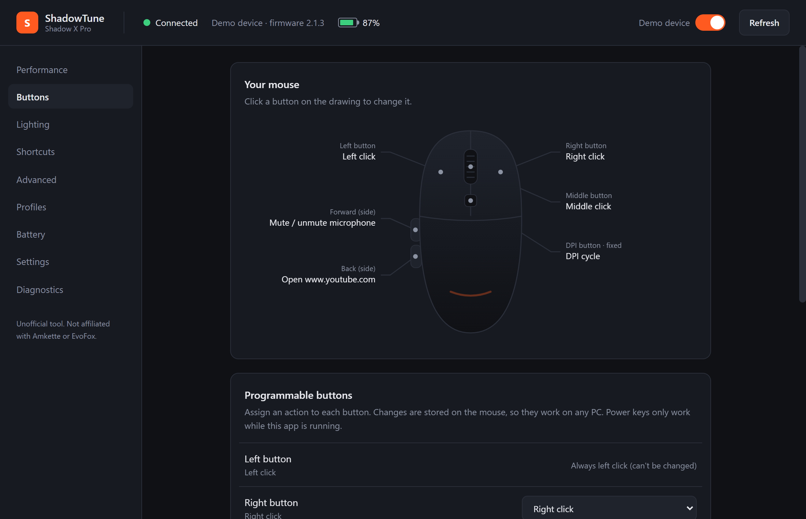

Your EvoFox Shadow X Pro,
without the browser.
A small Windows app for the EvoFox Shadow X Pro wireless mouse. Change DPI, buttons, lighting and profiles. Plus tray battery, power keys and shortcuts that the web configurator can't do.

Everything the web app does
The same settings as the official web configurator. Everything is saved on the mouse, so it works on any PC.
DPI stages
1–5 stages from 200 to 6400 DPI, with any value in between.
Button remapping
Mouse, media, browser and system actions, or any key combination.
Lighting
All lighting effects, including off.
Polling & scroll
Polling rate up to 1000 Hz and scroll direction.
Profiles
Save setups on your PC, then export, import and switch in one click.
Battery & firmware
Battery level, charging status and firmware version at a glance.
…and things it can't
A desktop app can sit in the tray and react to your mouse all day. A browser tab can't.
Power keys
Make a side button open an app or website, type text, mute your mic, take a screenshot or lock the PC.
Keyboard shortcuts
Global hotkeys, e.g. Ctrl+Alt+D for the next DPI stage or Ctrl+Alt+L for lights.
Tray quick menu
Right-click the tray icon to switch DPI, toggle lights or apply a profile.
Battery history
Battery % on the tray icon, a history chart, a time-left estimate, and low-battery and fully-charged alerts.
Per-program profiles
Optional: switch profile automatically when you open a game or app. Off by default.
Built to be safe
Every change is read back from the mouse to confirm it saved, automatic changes are rate-limited, and the firmware is never touched.
A closer look
Screenshots from the app's built-in demo device.
Click a button on the drawing to remap it. Each callout shows what that button does.
What works when the app is closed?
The mouse stores its own settings. The extras need the app, which runs quietly in the tray.
Saved on the mouse
These keep working with the app closed, even on another PC:
- DPI stages, polling rate, lighting, scroll direction
- Button remaps: clicks, media keys, browser keys, key combinations
Needs the app running
Turn on Settings → Start with Windows so these always work:
- Power keys (open apps, mute mic, lights on/off…)
- Keyboard shortcuts and the tray quick menu
- Battery alerts, history and the tray battery icon
Install in a minute
Use the USB receiver or the cable. Bluetooth mode can't be configured.
- Download ShadowTune-Setup-0.1.0.exe and run it.
- If Windows SmartScreen warns you, click More info → Run anyway. The app isn't code-signed (that costs money each year), so Windows doesn't recognise it yet.
- Plug in the receiver and open ShadowTune from the Start menu. It finds the mouse automatically.
- Close the official web configurator if it's open in a browser tab. Two apps writing to the mouse at once undo each other's changes.
- Change settings and click Apply to mouse. No mouse to hand? Turn on Demo device in the top bar.
FAQ
Is this the official EvoFox software?
No. It's a personal project by an individual, not made, reviewed or supported by EvoFox or Amkette. It sends the same commands the official web configurator sends.
Can it damage my mouse?
It never updates or writes firmware. It changes only the settings the web configurator changes, reads every change back to confirm it saved, and limits how often automatic changes can happen. Still, it's unofficial, so use it at your own risk.
Which mice does it support?
Only the EvoFox Shadow X Pro, connected by its 2.4 GHz USB receiver or by cable. Other EvoFox models may use different commands and aren't supported.
Does it work on Mac or Linux?
No, Windows 10 and 11 (64-bit) only.
Does it collect any data?
No. There are no accounts, analytics or internet requests. Profiles and settings stay in a folder on your PC.
How do I uninstall it?
Windows Settings → Apps → Installed apps → ShadowTune → Uninstall. Your mouse keeps its current settings. To reset them, use Diagnostics → Restore factory settings first.
⚠ Disclaimer
ShadowTune is an unofficial, independent project made by one person. It is not affiliated with, endorsed by or supported by EvoFox or Amkette. "EvoFox" and "Shadow X Pro" are their trademarks and are used here only to say which mouse this works with.
The software is provided as is, with no warranty. Use it at your own risk. The author isn't responsible for any problems with your device, settings or system. If something goes wrong, the official web configurator can always restore your mouse.